マテリアル コンポーネント (MDC) は、開発者がマテリアル デザインを実装するのに役立ちます。 Google のエンジニアと UX デザイナーのチームによって作成された MDC は、多数の美しく機能的な UI コンポーネントを備えており、Android、iOS、ウェブ、および Flutter.material.io/develop で利用できます。
MDC を使用して、アプリの独自のスタイルをこれまで以上にカスタマイズできるようになりました。 Material Design の最近の拡張により、デザイナーや開発者は製品のブランドをより柔軟に表現できるようになりました。
コードラボ MDC-101 と MDC-102 では、Material Components (MDC) を使用して、Shrine というアプリの基本を作成しました。Shrine は、衣料品や家庭用品を販売する e コマース アプリです。 このアプリには、ログイン画面から始まり、製品を表示するホーム画面にユーザーを誘導するユーザー フローが含まれています。
この Codelab では、以下を使用して Shrine アプリをカスタマイズします。
Android | iOS |
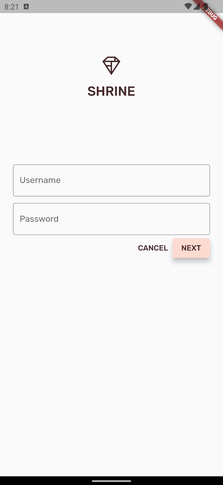 | |
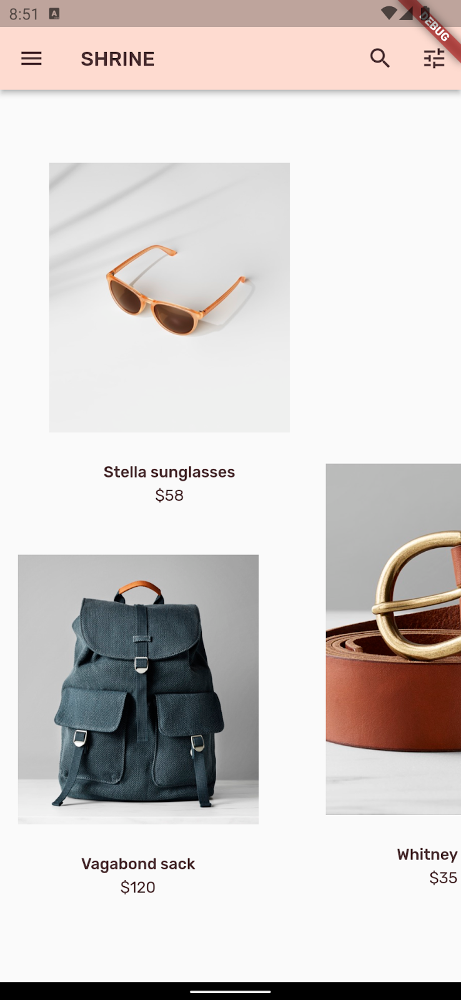 | 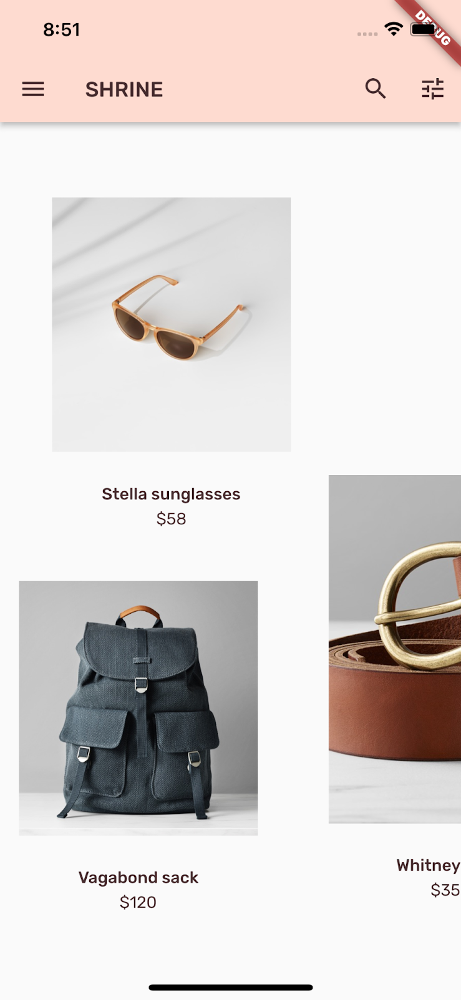 |
このラボを完了するには、Flutter SDK とエディタの 2 つのソフトウェアが必要です。
次のいずれかのデバイスを使用して Codelab を実行できます。
MDC-101 を完了している場合は、コードをこの Codelab 用に準備する必要があります。
手順にスキップ: トップ アプリ バーを追加します。
Zip ダウンロード or Git Clone のどちらかの方法でダウンロードを行って下さい。
スターター プロジェクトは、material-components-flutter-codelabs-103-starter_and_102-complete/mdc_100_series ディレクトリにあります。
GitHub からこの Codelab のクローンを作成するには、次のコマンドを実行します。
git clone https://github.com/material-components/material-components-flutter-codelabs.git cd material-components-flutter-codelabs/mdc_100_series git checkout 103-starter_and_102-complete
成功！ 以前の Codelab の Shrine ログイン ページがデバイスに表示されます。
Android | iOS |
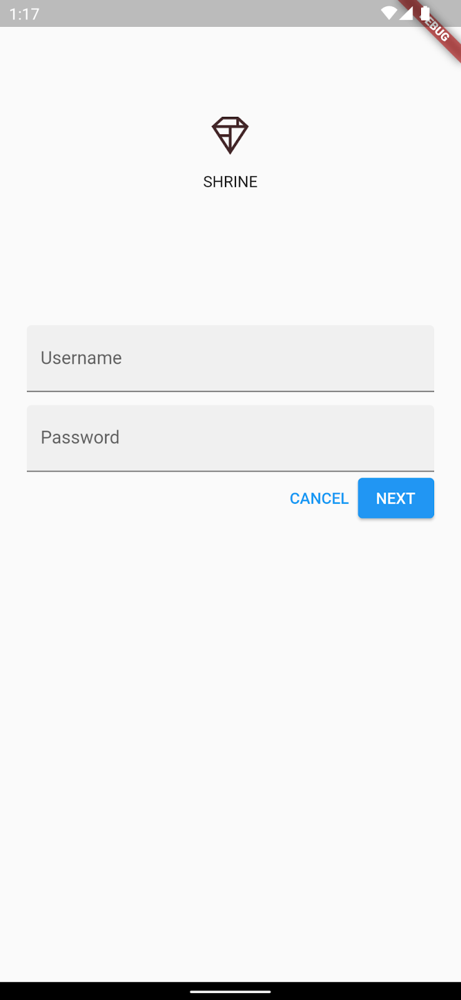 | 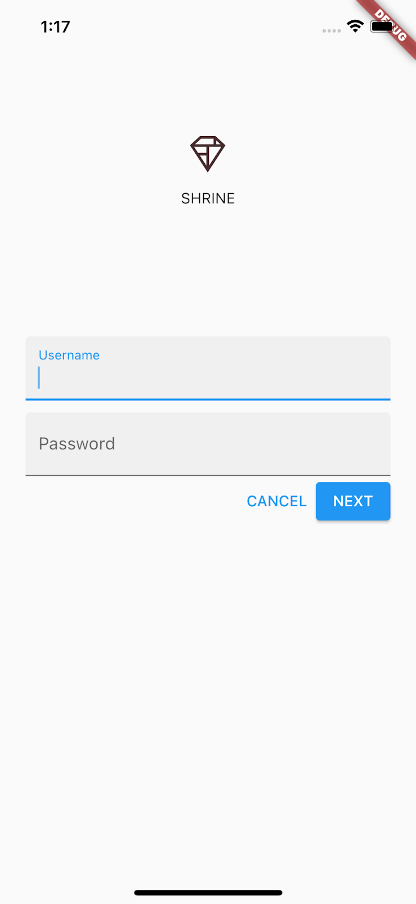 |
[次へ] をクリックして、前の Codelab のホームページを表示します。
Android | iOS |
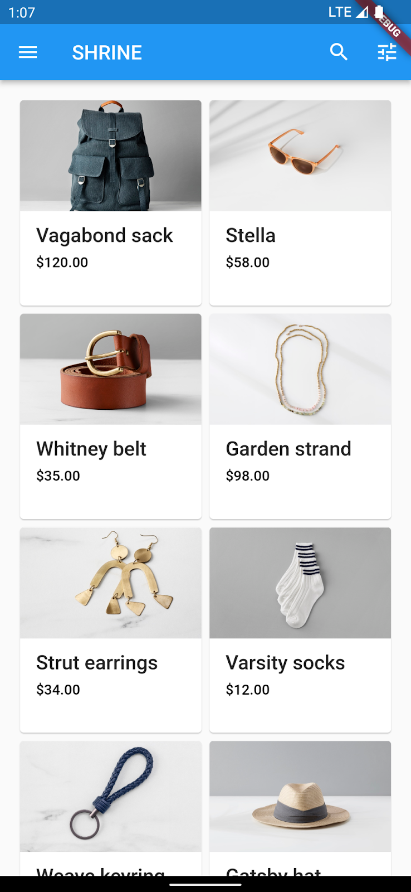 | 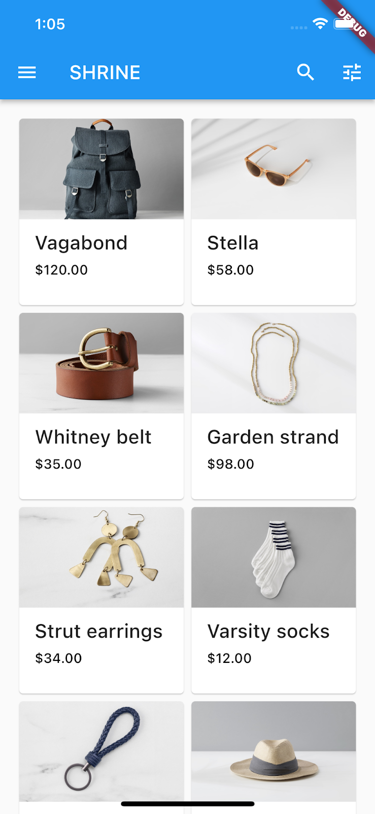 |
Shrine ブランドを表す配色が作成されました。デザイナーは、Shrine アプリ全体でその配色を実装することを望んでいます。
まず、これらの色をプロジェクトにインポートしましょう。
colors.dart という新しいファイルを lib フォルダに作成します。 マテリアル コンポーネントをインポートし、const Color 値を追加します。
import 'package:flutter/material.dart'; const kShrinePink50 = Color(0xFFFEEAE6); const kShrinePink100 = Color(0xFFFEDBD0); const kShrinePink300 = Color(0xFFFBB8AC); const kShrinePink400 = Color(0xFFEAA4A4); const kShrineBrown900 = Color(0xFF442B2D); const kShrineErrorRed = Color(0xFFC5032B); const kShrineSurfaceWhite = Color(0xFFFFFBFA); const kShrineBackgroundWhite = Colors.white;
このカラー テーマは、カスタム カラーを使用してデザイナーによって作成されました (下の画像を参照)。 これには、Shrine のブランドから選択された色が含まれており、Material Theme Editor に適用され、より充実したパレットを作成するために拡張されています。 (これらの色は、2014 のマテリアル カラー パレットからのものではありません。)
Material Theme Editor は、各色のラベル 50、100、200、.... 900 を含む、数値でラベル付けされた色合いにそれらを整理しました。 シュラインは、ピンク色の見本の 50、100、および 300 と、茶色の見本の色 900 のみを使用します。
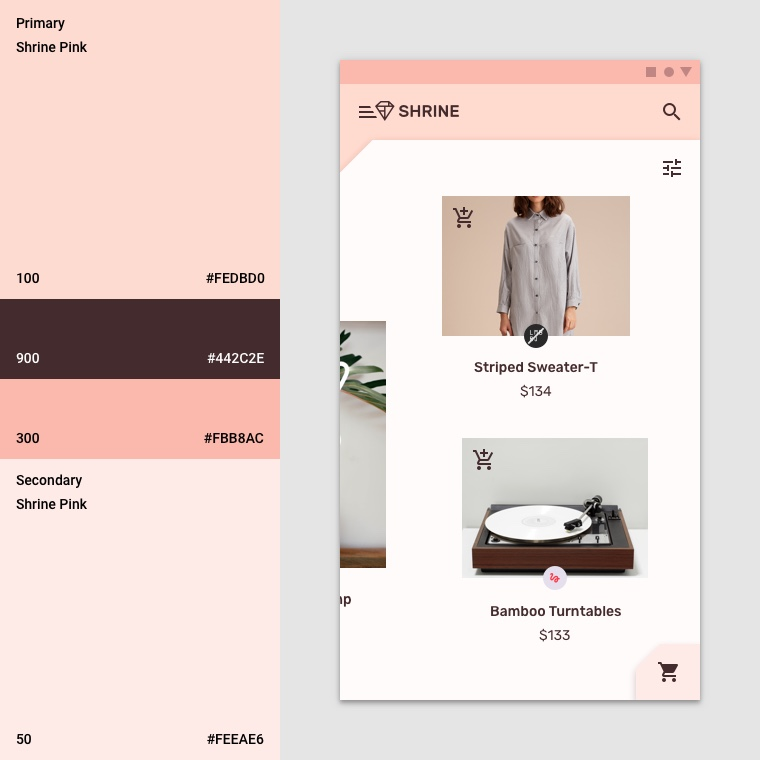
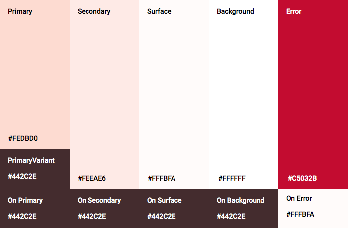
ウィジェットの各色付きパラメーターは、これらのスキームの色にマップされます。 たとえば、アクティブに入力を受け取っているときのテキスト フィールドの装飾の色は、テーマのプライマリ カラーにする必要があります。 その色にアクセスできない (背景に対して見やすい) 場合は、代わりに PrimaryVariant を使用します。
これらのバリエーションは 2014 マテリアル ガイドライン用に作成されたもので、現在のガイドライン (カラー システムの記事) と MDC-Flutter の両方で引き続き利用できます。コードでそれらにアクセスするには、ベース カラーを呼び出してから、シェード (通常は 100 の値) を呼び出します。たとえば、Pink 400 は次のコマンドで取得されます: Colors.pink[400]。
これらのパレットをデザインやコードに使用しても問題ありません。ブランディングに固有の色が既にある場合は、パレット生成ツールまたはマテリアル テーマ エディターを使用して、独自の調和のとれたパレットを生成できます。
使用したい色ができたので、それらを UI に適用できます。これを行うには、ウィジェット階層の最上位にある MaterialApp インスタンスに適用する ThemeData ウィジェットの値を設定します。
Flutter には、いくつかの組み込みテーマが含まれています。ライト テーマはその 1 つです。 ThemeData ウィジェットを最初から作成するのではなく、ライト テーマをコピーして値を変更し、アプリ用にカスタマイズします。
color.dart を app.dart にインポートしましょう。
import 'colors.dart';
次に、ShrineApp クラスのスコープ外の app.dart に次を追加します。
// TODO: Build a Shrine Theme (103)
final ThemeData _kShrineTheme = _buildShrineTheme();
ThemeData _buildShrineTheme() {
final ThemeData base = ThemeData.light();
return base.copyWith(
colorScheme: base.colorScheme.copyWith(
primary: kShrinePink100,
onPrimary: kShrineBrown900,
secondary: kShrineBrown900,
error: kShrineErrorRed,
),
// TODO: Add the text themes (103)
// TODO: Add the icon themes (103)
// TODO: Decorate the inputs (103)
);
}
次に、theme: を設定します。ShrineApp の build() 関数 (MaterialApp ウィジェット内) の最後に新しいテーマを設定します。
// TODO: Add a theme (103) theme: _kShrineTheme, // New code
プロジェクトを保存します。 ログイン画面は次のようになります。
Android | iOS |
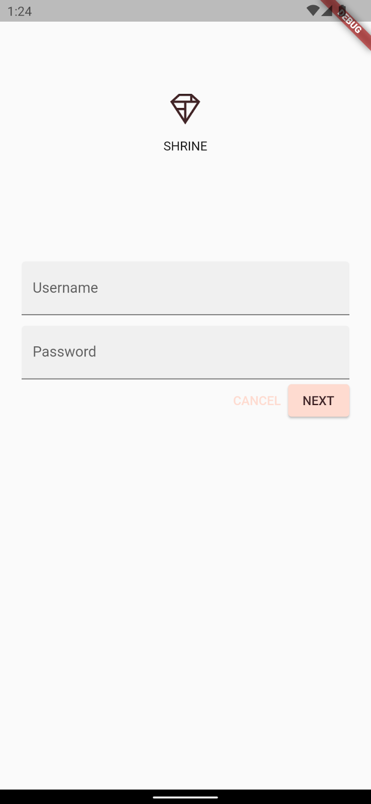 | 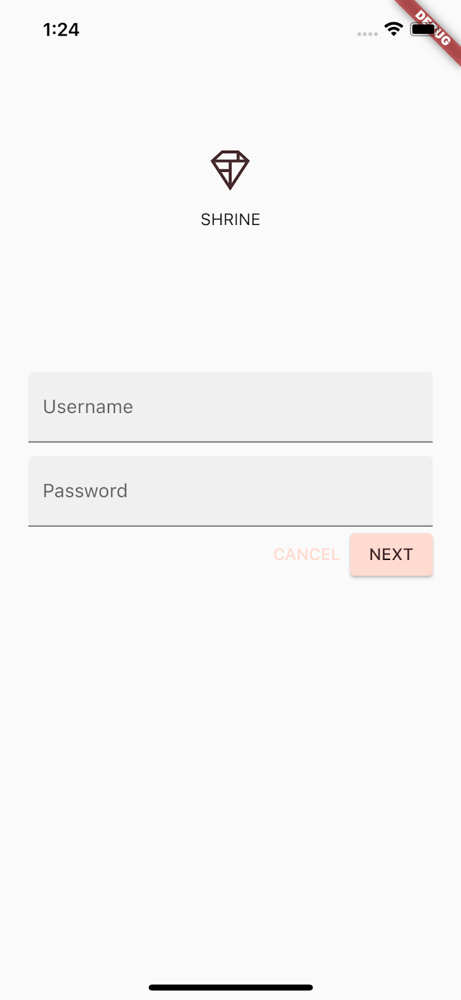 |
ホーム画面は次のようになります。
Android | iOS |
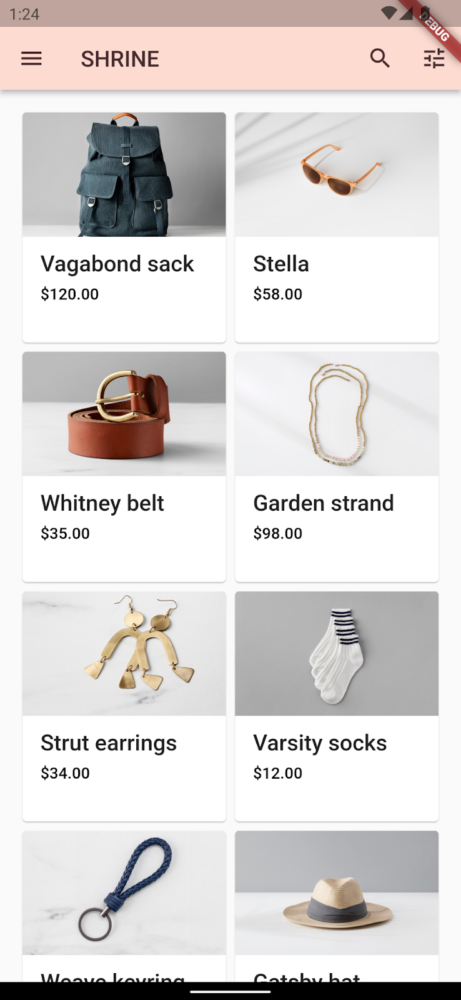 | 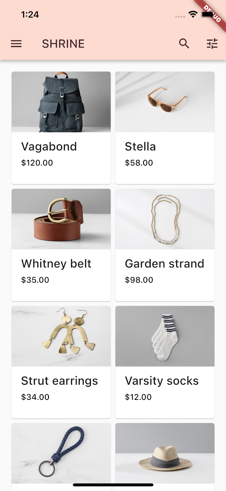 |
色の変更に加えて、デザイナーは使用する特定のタイポグラフィも提供してくれました。 Flutter の ThemeData には 3 つのテキスト テーマが含まれています。 各テキスト テーマは、「見出し」や「タイトル」などのテキスト スタイルのコレクションです。 アプリにいくつかのスタイルを使用し、いくつかの値を変更します。
プロジェクトにフォントをインポートするには、それらを pubspec.yaml ファイルに追加する必要があります。
pubspec.yaml で、flutter: タグの直後に次を追加します。
# TODO: Insert Fonts (103)
fonts:
- family: Rubik
fonts:
- asset: fonts/Rubik-Regular.ttf
- asset: fonts/Rubik-Medium.ttf
weight: 500
これで、Rubik フォントにアクセスして使用できるようになりました。
上記の宣言をカット アンド ペーストすると、pub get の実行中にエラーが発生する場合があります。 エラーが発生した場合は、最初に先頭の空白を削除し、2 スペースのインデントを使用してスペースに置き換えます。 (前に 2 つのスペース
fonts:
、前に 4 つのスペース
family: Rubik
、 等々。）
Mapping values are not allowed here と表示された場合は、問題のある行のインデントとその上の行のインデントを確認してください。
login.dart で、Column() 内で次のように変更します。
Column(
children: <Widget>[
Image.asset('assets/diamond.png'),
const SizedBox(height: 16.0),
Text(
'SHRINE',
style: Theme.of(context).textTheme.headline5,
),
],
)
app.dart で、_buildShrineTheme() の後に次を追加します。
// TODO: Build a Shrine Text Theme (103)
TextTheme _buildShrineTextTheme(TextTheme base) {
return base.copyWith(
headline5: base.headline5!.copyWith(
fontWeight: FontWeight.w500,
),
headline6: base.headline6!.copyWith(
fontSize: 18.0,
),
caption: base.caption!.copyWith(
fontWeight: FontWeight.w400,
fontSize: 14.0,
),
bodyText1: base.bodyText1!.copyWith(
fontWeight: FontWeight.w500,
fontSize: 16.0,
),
).apply(
fontFamily: 'Rubik',
displayColor: kShrineBrown900,
bodyColor: kShrineBrown900,
);
}
これは TextTheme を受け取り、見出し、タイトル、およびキャプションの外観を変更します。
このように fontFamily を適用すると、copyWith() で指定されたタイポグラフィ スケール値 (見出し、タイトル、キャプション) のみに変更が適用されます。
一部のフォントでは、カスタムの fontWeight を 100 単位で設定しています。w500 (500 ウェイト) はミディアムに対応し、w400 は通常に対応します。
エラーの後、次のテーマを _buildShrineTheme に追加します。
// TODO: Add the text themes (103) textTheme: _buildShrineTextTheme(base.textTheme), textSelectionTheme: const TextSelectionThemeData( selectionColor: kShrinePink100, ),
プロジェクトを保存します。 今回は、フォントを変更したため、アプリも再起動します (ホット リスタートと呼ばれます)。
Android | iOS |
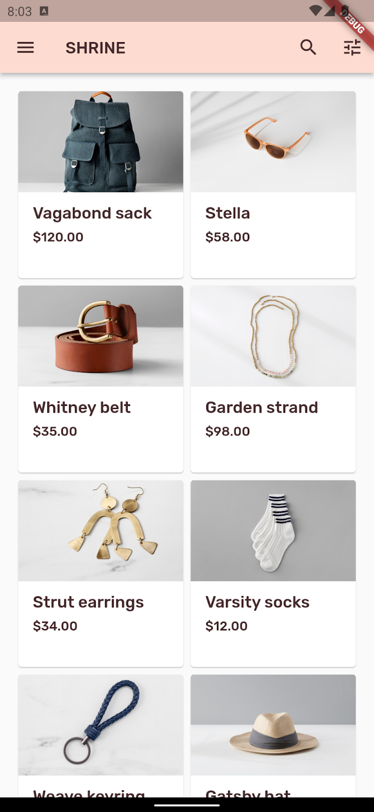 | 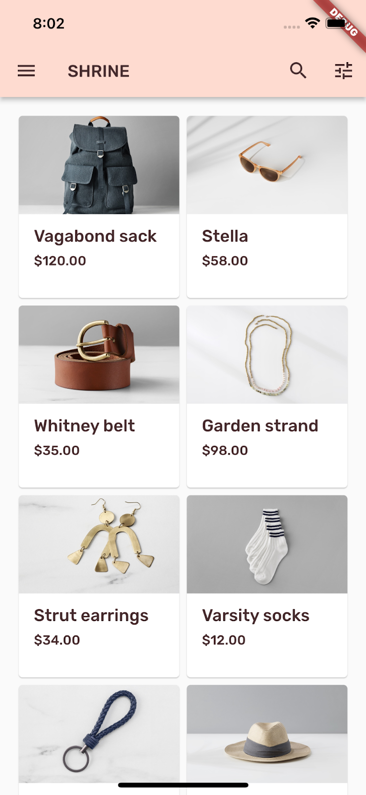 |
ログイン画面とホーム画面のテキストは異なって表示されます。一部のテキストは Rubik フォントを使用し、その他のテキストは黒または白ではなく茶色で表示されます。 アイコンも茶色でレンダリングされます。
ラベルが少し大きすぎます。
home.dart で、最も内側の Column の children: を変更します。
// TODO: Change innermost Column (103)
children: <Widget>[
// TODO: Handle overflowing labels (103)
Text(
product.name,
style: theme.textTheme.button,
softWrap: false,
overflow: TextOverflow.ellipsis,
maxLines: 1,
),
const SizedBox(height: 4.0),
Text(
formatter.format(product.price),
style: theme.textTheme.caption,
),
// End new code
],
ラベルを中央に配置し、テキストを各画像の下部ではなく、各カードの下部に揃えます。
ラベルを主軸の最後 (下) に移動し、中央に配置するように変更します::
プロジェクトを保存します。
Android | iOS |
それははるかに良く見えます。
InputDecorationTheme を使用してテキスト フィールドの装飾をテーマにすることもできます。
app.dart の _buildShrineTheme() メソッドで、inputDecorationTheme: 値を指定します。
// TODO: Decorate the inputs (103) inputDecorationTheme: const InputDecorationTheme( border: OutlineInputBorder(), ),
現在、テキスト フィールドの装飾には filled が使われています。 それを取り除きましょう。 filled を削除して inputDecorationTheme を指定すると、テキスト フィールドにアウトライン スタイルが適用されます。
login.dart で、filled: true 値を削除します。
// Remove filled: true values (103)
TextField(
controller: _usernameController,
decoration: const InputDecoration(
// Removed filled: true
labelText: 'Username',
),
),
const SizedBox(height: 12.0),
TextField(
controller: _passwordController,
decoration: const InputDecoration(
// Removed filled: true
labelText: 'Password',
),
obscureText: true,
),
ホットリスタート。 [ユーザー名] フィールドがアクティブなとき (入力中) のログイン画面は次のようになります。
Android | iOS |
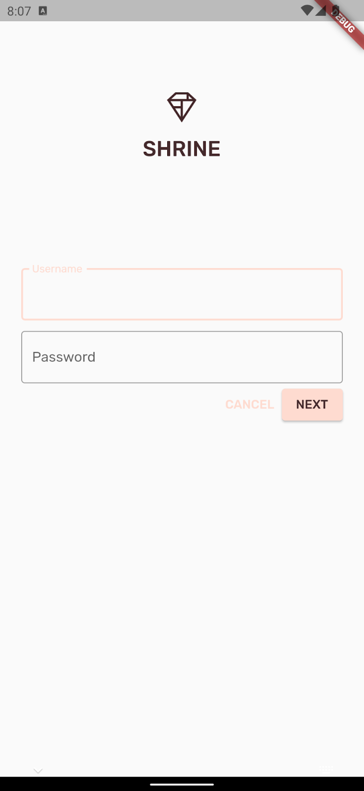 | 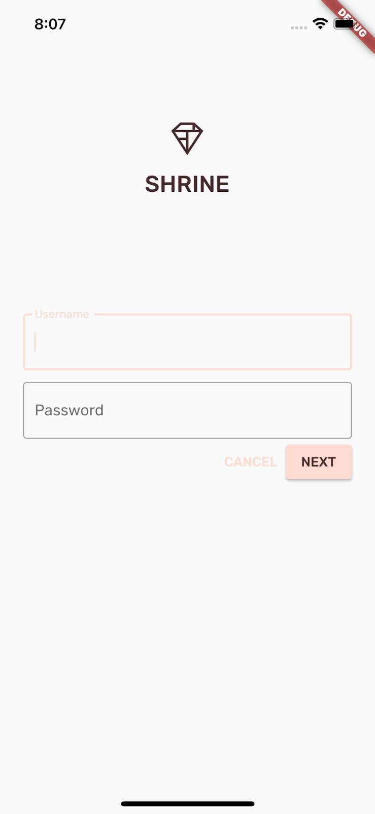 |
テキスト フィールドに入力します。境界線とフローティング ラベルは原色で表示されます。 しかし、私たちはそれを簡単には見ることができません。 色のコントラストが十分に高くないピクセルを区別するのに問題がある人にはアクセスできません。 (詳細については、マテリアル ガイドラインの色の記事の「アクセシブルな色」を参照してください。)
app.dart で、inputDecorationTheme: の下に focusedBorder: を指定します。
// TODO: Decorate the inputs (103)
inputDecorationTheme: const InputDecorationTheme(
border: OutlineInputBorder(),
focusedBorder: OutlineInputBorder(
borderSide: BorderSide(
width: 2.0,
color: kShrineBrown900,
),
),
),
次に、inputDecorationTheme: の下に floatingLabelStyle: を指定します。
// TODO: Decorate the inputs (103)
inputDecorationTheme: const InputDecorationTheme(
border: OutlineInputBorder(),
focusedBorder: OutlineInputBorder(
borderSide: BorderSide(
width: 2.0,
color: kShrineBrown900,
),
),
floatingLabelStyle: TextStyle(
color: kShrineBrown900,
),
),
最後に、[キャンセル] ボタンでプライマリ カラーではなくセカンダリ カラーを使用して、コントラストを高めます。
TextButton(
child: const Text('CANCEL'),
onPressed: () {
_usernameController.clear();
_passwordController.clear();
},
style: TextButton.styleFrom(
primary: Theme.of(context).colorScheme.secondary,
),
),
プロジェクトを保存します。
Android | iOS |
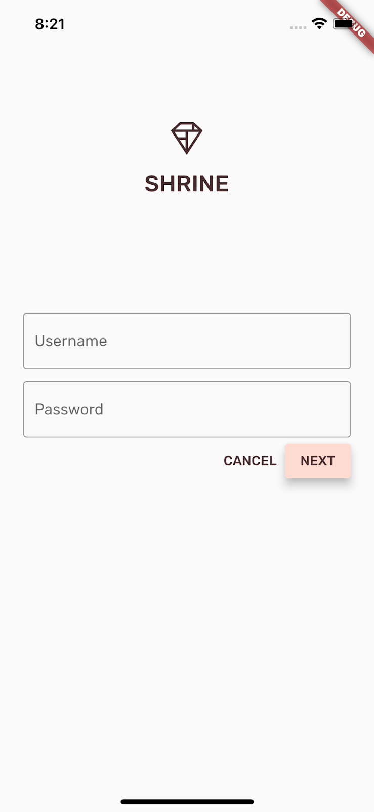 |
アプリに一致する特定の色とタイポグラフィでページのスタイルを設定したので、標高を調整しましょう。
ElevatedButton のデフォルトの高さは 2 です。さらに高くしましょう。
login.dart で、NEXT の ElevatedButton に style: 値を追加します。
ElevatedButton(
child: const Text('NEXT'),
onPressed: () {
Navigator.pop(context);
},
style: ElevatedButton.styleFrom(
elevation: 8.0,
),
),
プロジェクトを保存します。
現在、カードはサイトのナビゲーションの横の白い表面に置かれています。
home.dart で、elevation: 値を Cards: に追加します。
// TODO: Adjust card heights (103) elevation: 0.0,
プロジェクトを保存します。
Android | iOS |
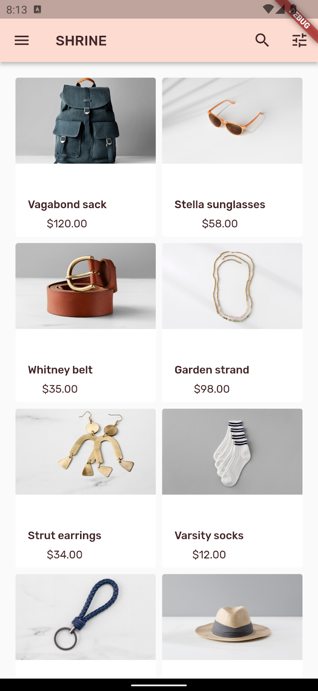 | 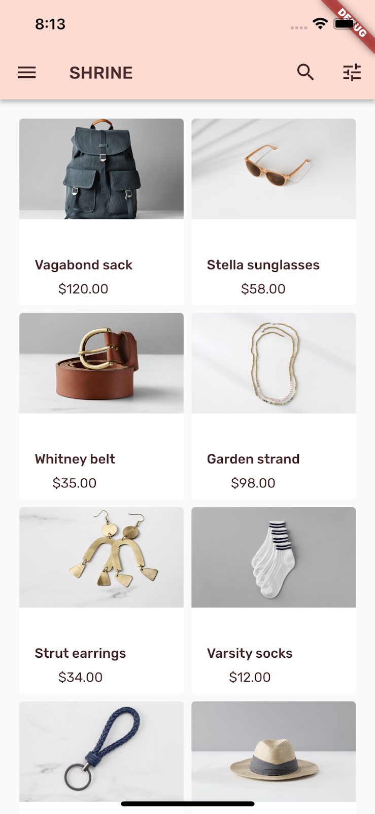 |
カードの下の影を削除しました。
Shrine は、八角形または長方形の要素を定義するクールな幾何学的なスタイルを持っています. ホーム画面のカードと、ログイン画面のテキスト フィールドとボタンに、その形状のスタイリングを実装しましょう。
app.dart で、次のファイルをインポートします。
import 'supplemental/cut_corners_border.dart';
引き続き app.dart で、テキスト フィールドの装飾テーマを変更して、角を切り取った境界線を使用します。
// TODO: Decorate the inputs (103)
inputDecorationTheme: const InputDecorationTheme(
border: CutCornersBorder(),
focusedBorder: CutCornersBorder(
borderSide: BorderSide(
width: 2.0,
color: kShrineBrown900,
),
),
floatingLabelStyle: TextStyle(
color: kShrineBrown900,
),
),
login.dart で、斜めの長方形の境界線を CANCEL ボタンに追加します。
TextButton(
child: const Text('CANCEL'),
onPressed: () {
_usernameController.clear();
_passwordController.clear();
},
style: TextButton.styleFrom(
primary: Theme.of(context).colorScheme.secondary,
shape: const BeveledRectangleBorder(
borderRadius: BorderRadius.all(Radius.circular(7.0)),
),
),
),
TextButton には目に見える形がないのに、なぜ境界線の形を追加するのでしょうか? そのため、リップル アニメーションは、タッチすると同じ形状にバインドされます。
次に、同じ形状を NEXT ボタンに追加します。
ElevatedButton(
child: const Text('NEXT'),
onPressed: () {
Navigator.pop(context);
},
style: ElevatedButton.styleFrom(
elevation: 8.0,
shape: const BeveledRectangleBorder(
borderRadius: BorderRadius.all(Radius.circular(7.0)),
),
),
すべてのボタンの形状を変更するには、app.dart で elevatedButtonTheme または textButtonTheme を使用することもできます。 それは学習者への課題として残されています!
ホットリスタート。
Android | iOS |
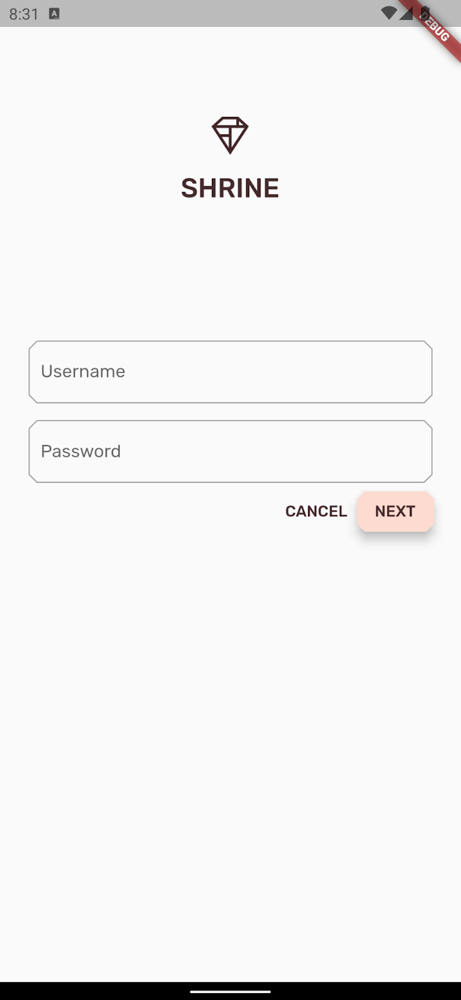 |
次に、レイアウトを変更して、さまざまな縦横比とサイズでカードを表示し、各カードが他のカードとは異なるように見えるようにします。
非対称レイアウト用のファイルは既に作成済みです。
home.dart に、次のインポートを追加します。
import 'supplemental/asymmetric_view.dart';
_buildGridCards を削除し、body を置き換えます。
body: AsymmetricView( products: ProductsRepository.loadProducts(Category.all), ),
プロジェクトを保存します。
Android | iOS |
現在、製品は織物にインスパイアされたパターンで水平にスクロールします。
色はブランドを表現する強力な方法であり、色のわずかな変更がユーザー エクスペリエンスに大きな影響を与える可能性があります。 これをテストするために、ブランドの配色が少し異なる場合に神社がどのように見えるかを見てみましょう.
colors.dart で、次の色を追加します。
const kShrinePurple = Color(0xFF5D1049);
app.dart で、_buildShrineTheme() 関数を次のように変更します。
ThemeData _buildShrineTheme() {
final ThemeData base = ThemeData.light();
return base.copyWith(
colorScheme: base.colorScheme.copyWith(
primary: kShrinePurple,
secondary: kShrinePurple,
error: kShrineErrorRed,
),
scaffoldBackgroundColor: kShrineSurfaceWhite,
textSelectionTheme: const TextSelectionThemeData(
selectionColor: kShrinePurple,
),
inputDecorationTheme: const InputDecorationTheme(
border: CutCornersBorder(),
focusedBorder: CutCornersBorder(
borderSide: BorderSide(
width: 2.0,
color: kShrinePurple,
),
),
floatingLabelStyle: TextStyle(
color: kShrinePurple,
),
),
);
}
ホットリスタート。 新しいテーマが表示されます。
Android | iOS |
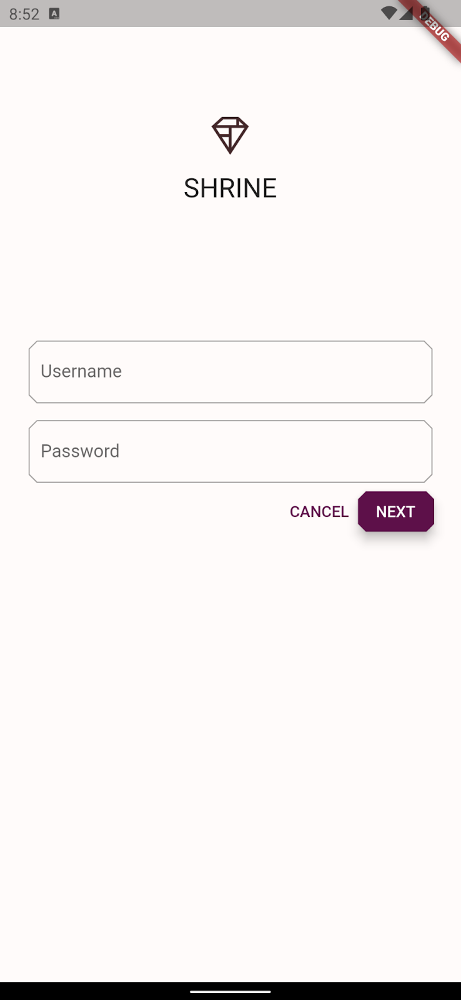 | 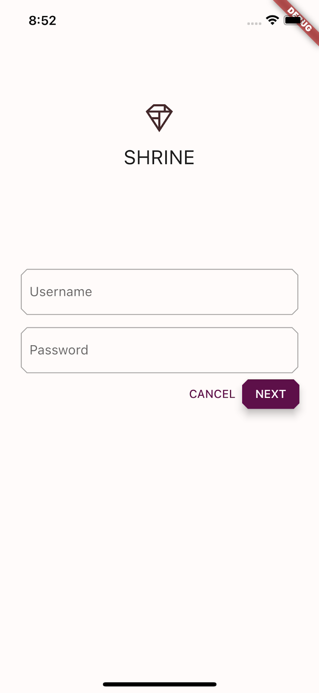 |
Android | iOS |
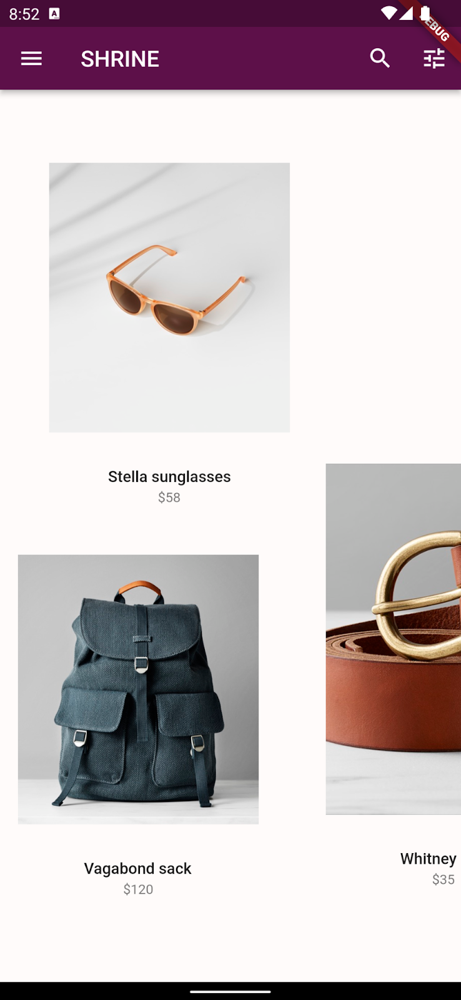 | 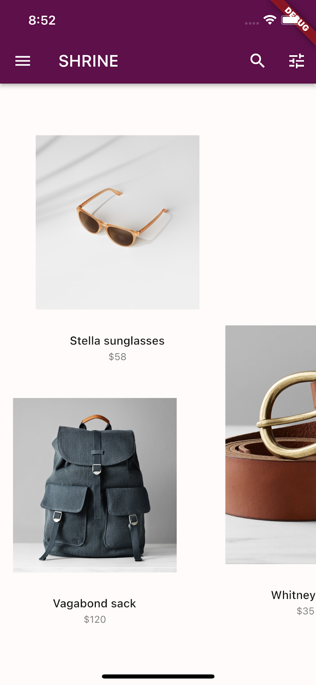 |
結果は大きく異なります！
app.dart の _buildShrineTheme をこのステップの前の状態に戻しましょう。 または、104 のスターター コードをダウンロードします。
これで、デザイナーの設計仕様に似たアプリを作成できました。
次の MDC コンポーネントを使用しました: テーマ、タイポグラフィ、標高、および形状。 MDC-Flutter ライブラリで、さらに多くのコンポーネントとサブシステムを調べることができます。
supplemental のフォルダを調べて、水平方向にスクロールする非対称レイアウト グリッドをどのように作成したかを確認してください。
計画中のアプリの設計に、MDC ライブラリにコンポーネントがない要素が含まれている場合はどうなりますか? MDC-104: Material Design Advanced Components では、MDC ライブラリを使用してカスタム コンポーネントを作成し、特定の外観を実現する方法を示します。